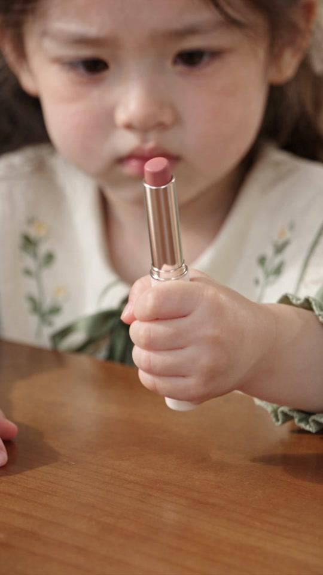
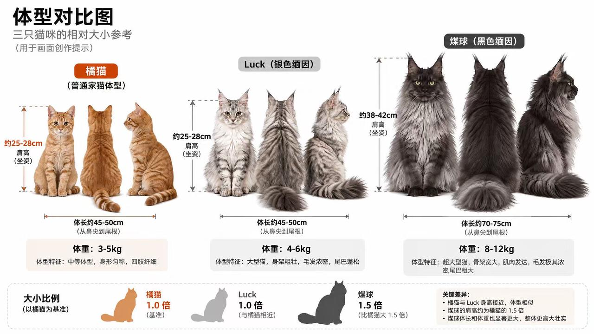
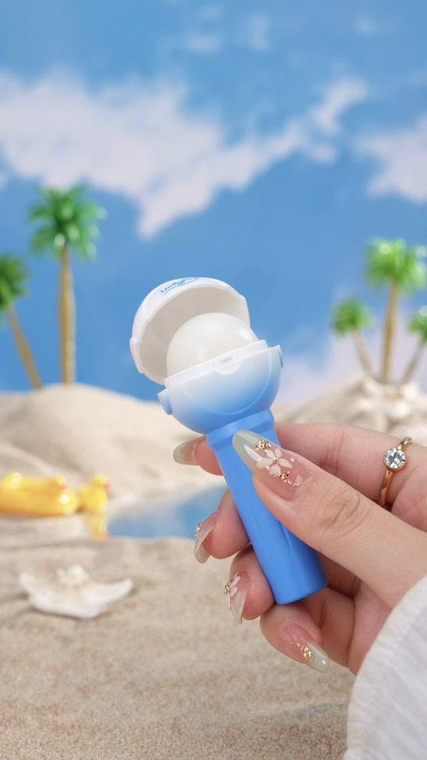
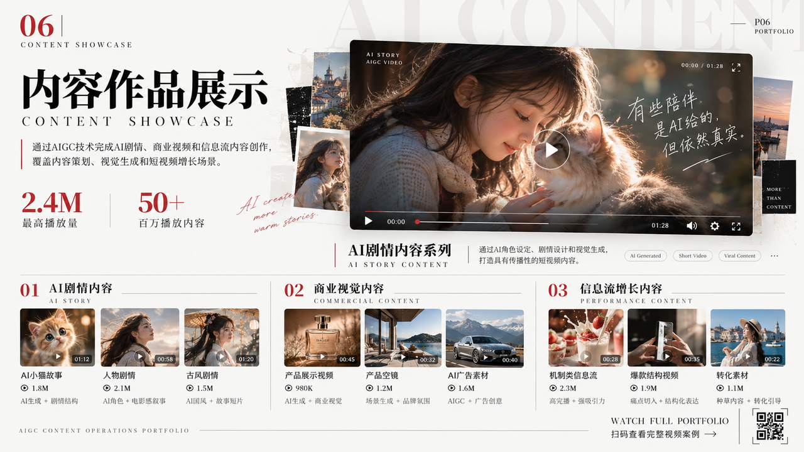
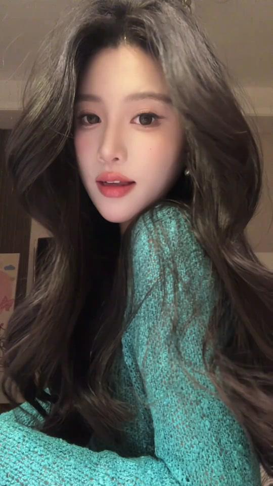
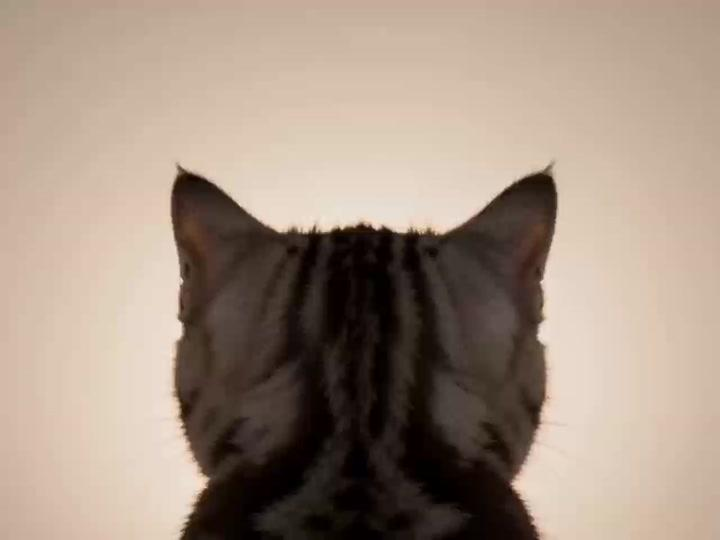
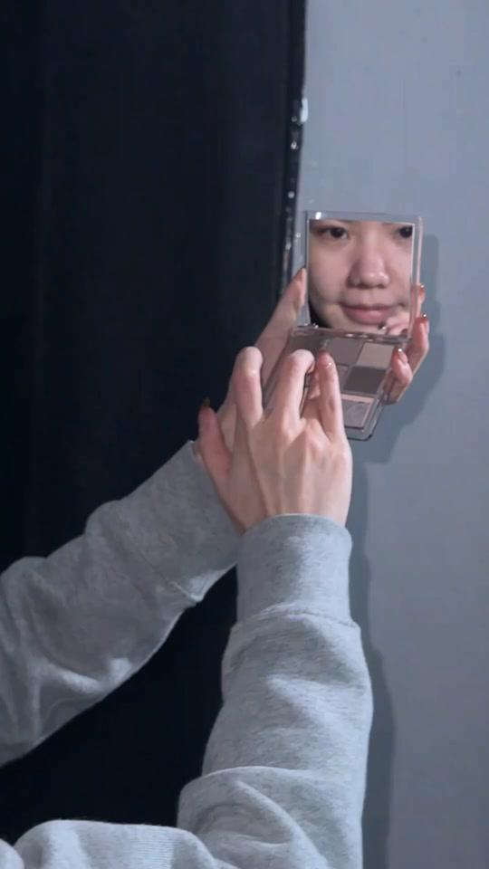

人物口播
人物口播与信息流成片
真实感人物表达 · 账号内容增长
AIGC OPERATOR · AI CONTENT CREATOR
你好，我是吴嘉仪。专注 AIGC 内容创作、抖音 / 小红书 / 快手信息流运营，用 AI 把灵感变成可传播、可复用、可转化的内容资产。
数据证明 / NUMBERS
精选作品 / VIDEO PORTFOLIO
人物口播 · AI 剧情 · 电商钩子
产品 TVC · 宠物与漫剧资产
真实感人物表达 · 账号内容增长

电商创意前 3 秒抓住注意力，强化转化

AI 资产Midjourney × 可灵 · 批量产出

AI 资产统一角色一致性，搭建内容资产

电商创意从脚本、分镜到成片的完整流程

人物口播高频更新与栏目化运营

AI 资产从剧本到场景、道具的 AI 工作流

电商创意围绕卖点设计视觉叙事
我的工作流 / PROCESS
洞察平台趋势，找到内容机会。
提炼爆款结构、脚本与视觉语言。
ChatGPT、即梦、Gemini 协同创作。
以 CTR、ROI 和完播率持续优化。
关于我 / ABOUT
三年内容实战经验，独立负责抖音、小红书、快手账号矩阵与内容生产。擅长从 0 到 1 搭建内容体系，把脚本、视觉、剪辑和数据复盘连成一条可复制的链路。
CONTACT / 联系
电话 / 微信：18073772607